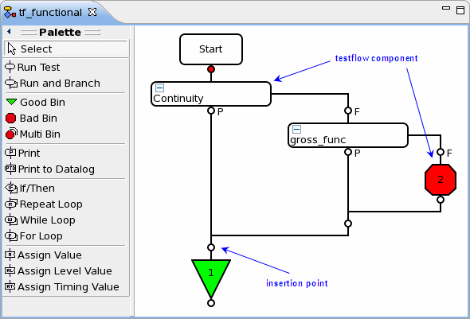
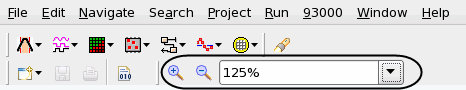

Flow Sequence Editor
This editor displays the testflow sequence in graphical form and allows you to edit it.

You can use the Palette on the left side of the editor to insert Testflow components into the testflow.
The main part of the window displays the graphical testflow sequence. The graphical testflow representation consists of insertion points and testflow components. You can enlarge or reduce it by clicking the Zoom in and Zoom out buttons on the main toolbar or by entering the desired zoom level as a percentage in the field beside the buttons.

Functional changes
- Introduced before SmarTest 6.3.2
- SmarTest 6.5.2: The Flow Sequence Editor replaces the Graphical Testflow Editor.
- SmarTest 6.5.2: For bin node, the OOC (Out Of Control) rule is not supported.